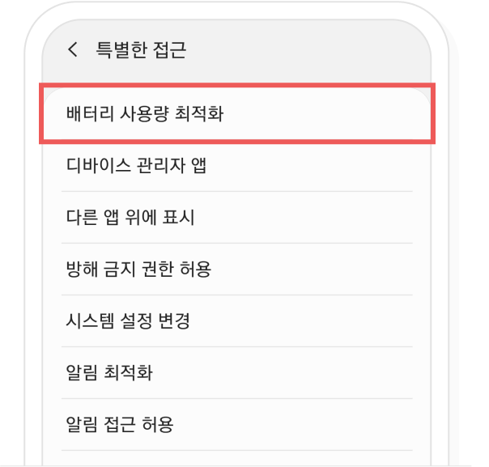
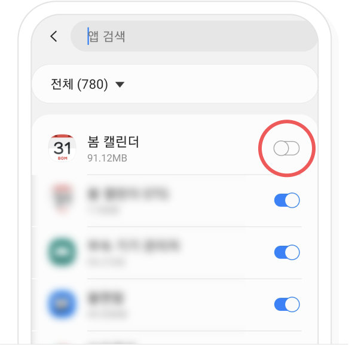

알림을 울리게 하기 위한 백그라운드 동작만 하기때문에 봄 캘린더를 최적화에서 제외 하더라도 배터리 효율에 큰 영향을 주지 않습니다.
-
‘배터리 사용량 최적화 설정 방법’ 화면 아래에 있는 ‘안드로이드 설정 바로가기' 버튼을 눌러서 ‘배터리 사용량 최적화’ 설정으로 이동해 주세요.

사이드 메뉴 버튼은 달력 하단 왼쪽에 있습니다.
달력 선택 버튼은 사이드 메뉴 상단의 프로필 우측에 있습니다.

달력 선택 팝업이 노출됩니다. 친구 달력 리스트에서 달력을 보고 싶은 친구를 선택해 주세요.
